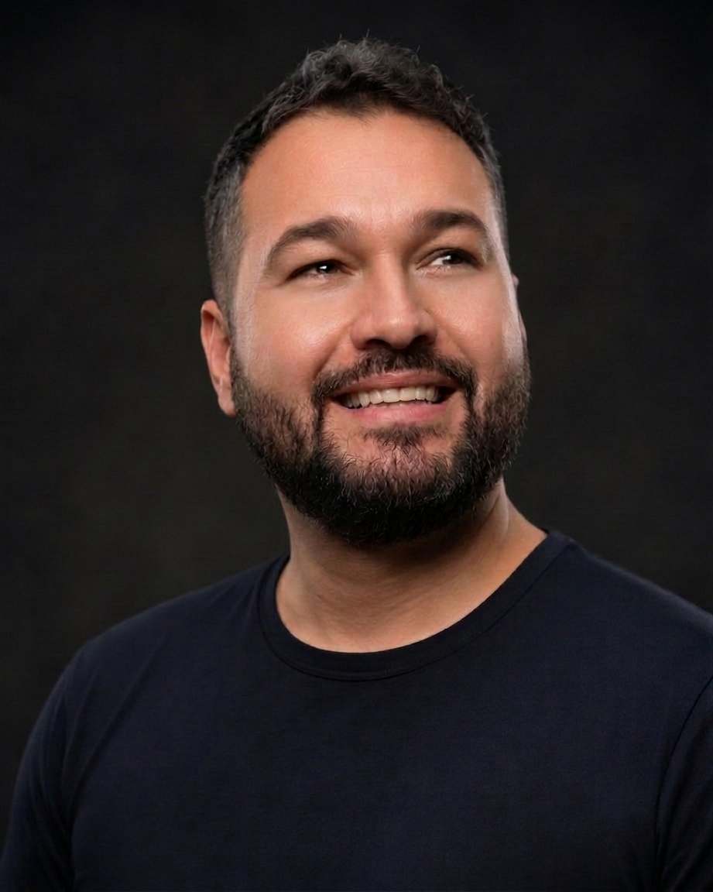
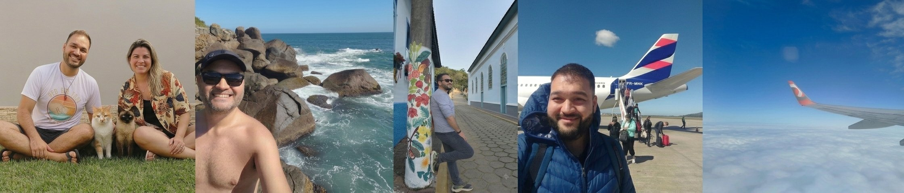
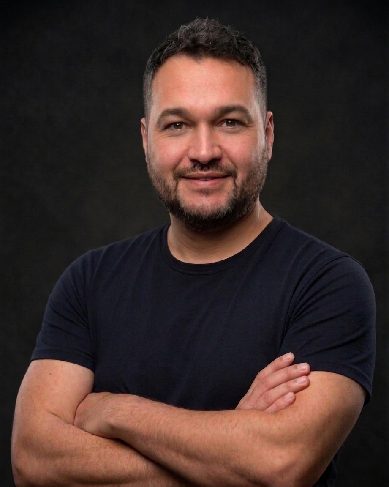

Analista Administrativo e Financeiro com mais de 6 anos dedicados a rotinas financeiras e mais de 15 anos em administração generalista — contas a pagar e a receber, fluxo de caixa, conciliação bancária e gestão de contratos.
Minha vivência acadêmica e profissional foi construída entre o interior e a capital: vivi em São Paulo por quase 10 anos e os demais em Atibaia. Essa mistura de origens e de cenários me deu repertório para lidar com pessoas e processos diferentes com naturalidade.
Nascido e criado em Atibaia, cidade a cerca de 50 minutos de São Paulo, sou um autêntico brasileiro — fruto de uma mistura de famílias imigrantes com descendência japonesa, italiana, portuguesa e indígena.
Passei os últimos 20 anos entre planilhas, contratos e pessoas — e é exatamente nesse cruzamento que encontro meu melhor trabalho.
Atuei em empresas de segmentos bem distintos entre si: saúde, turismo, indústria náutica e importação de bens e serviços especializados. Essa variedade me deu repertório para entender rotinas administrativas e financeiras sob ângulos distintos, com facilidade para me adaptar a novos processos, sistemas e equipes.
No dia a dia, sou responsável pelo contas a pagar e a receber, conciliação bancária em Excel e ERP, fluxo de caixa, planejamento financeiro, emissão de notas fiscais, bem como relatórios financeiros e de planejamento. Também atuei com folha de pagamento e benefícios, ponto eletrônico e tarefas ligadas ao DP.
Um pouco além da planilha e do fluxo de caixa.
Vivo em um relacionamento estável, sem filhos
Companhia de 2 gatos em casa
Gosto de viajar e conhecer lugares novos
Amo praia, sol e verão
Curioso: sempre buscando aprender

Passei por empresas de setores e portes bem diferentes, que contribuíram para o crescimento de minha bagagem profissional e cultural, gerando desafios distintos.
Rotinas administrativas e financeiras no setor de saúde e cuidados a idosos.
Administrativo, financeiro e atendimento a clientes no setor de turismo.
Coordenador Administrativo atuando como suporte direto ao Depto. Comercial, gestão de Site, banco de dados, CRM e Mídia.
Assistente Administrativo generalista, contas a pagar e compras.
Baixe meu currículo completo em PDF, com formação, cursos e histórico profissional detalhado.
Baixar currículo em PDFDuas frentes que considero essenciais para o financeiro de hoje.
Fórmulas, automações e análise de dados para tornar controles e relatórios financeiros mais rápidos e confiáveis.
Ferramentas de IA aplicadas à rotina administrativa e financeira — automação de análises e apoio à tomada de decisão.
Estou aberto a novas oportunidades em administração generalista e Financeiro, me chame para conversarmos mais.
